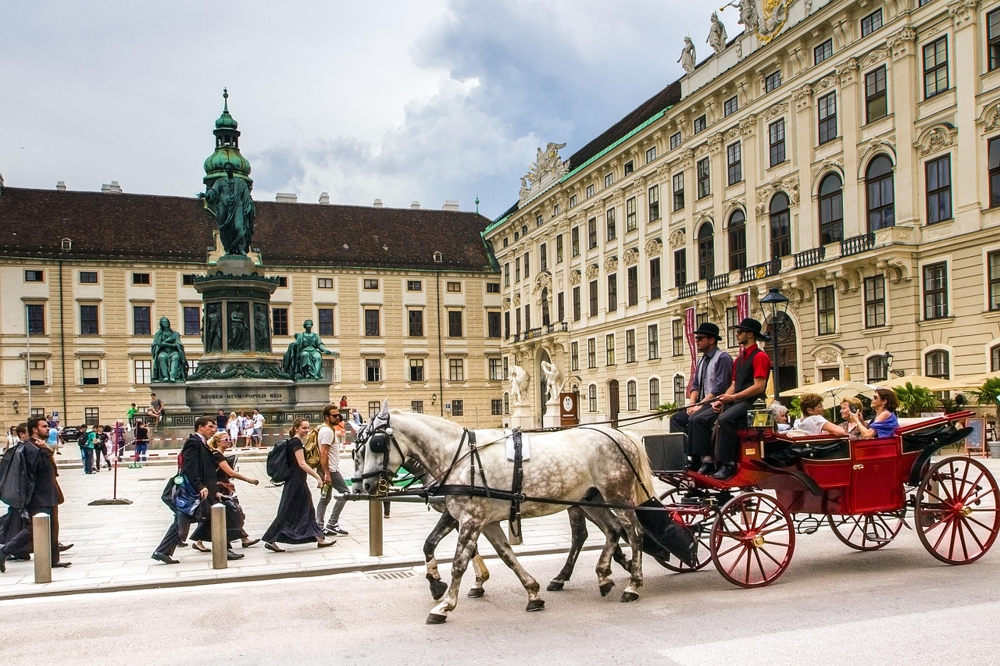
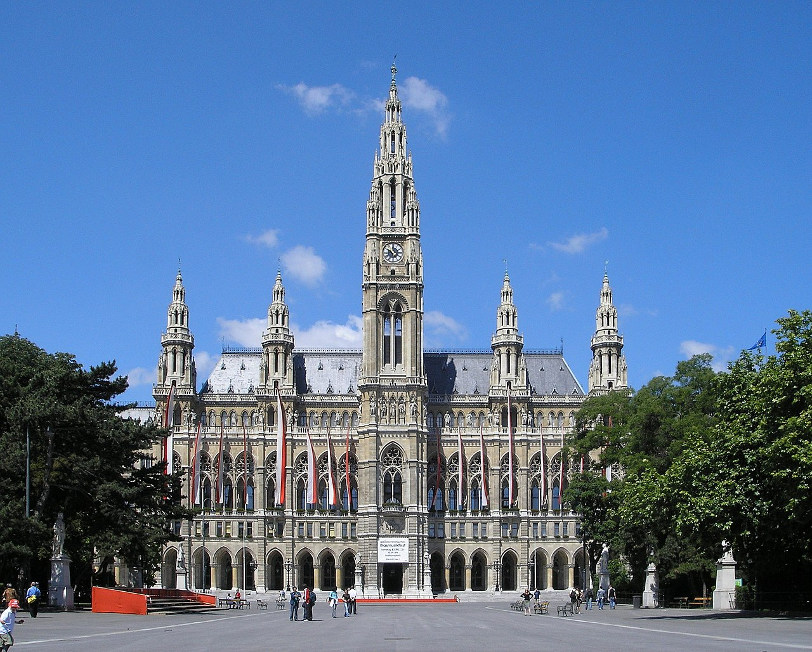
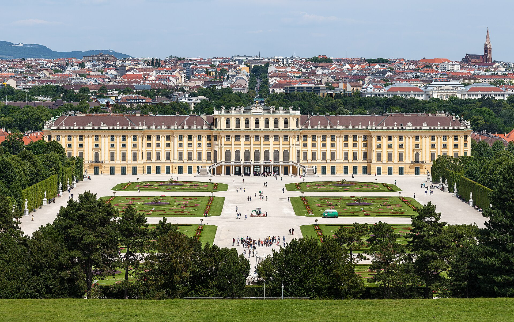

Wiedeń
Rzym Wiedeń Sztokholm
Stolica i największe miasto w Austrii położone w północno-wschodniej części kraju, nad Dunajem oraz miasto statutarne tworzące jednocześnie odrębny kraj związkowy.
Belweder

Barokowy pałac księcia Eugeniusza Sabaudzkiego, zlokalizowany w Wiedniu, w Austrii. Zaprojektował go architekt Johann Lucas von Hildebrandt. Składa się z dwóch budynków rozdzielonych ogrodem w stylu francuskim ozdobionym szeregiem posągów sfinksów. „Górny Belweder” przeznaczony był na bankiety i uroczystości, „Dolny Belweder” pełnił funkcję letniej rezydencji. W 1752 roku pałac został wykupiony przez cesarzową Marię Teresę i od 1775 roku z polecenia Józefa II w Belwederze przechowywano obrazy należące do rodziny cesarskiej. W 1806 roku do Belwederu przeniesiono również kolekcję obrazów z pałacu Ambras. Jako ostatni członek rodziny Habsburgów urzędował tu arcyksiążę Franciszek Ferdynand. Od zakończenia I wojny światowej, w budynkach znajdują się muzea. Budynek jednak mocno ucierpiał podczas II wojny światowej. Cały „Złoty Gabinet” spłonął i został później zrekonstruowany. Ogród jest najstarszą częścią całego kompleksu. Został zaprojektowany wkrótce po nabyciu gruntu, ok. 1700 roku, przez Dominique’a Girarda – ucznia André Le Nôtre’a.
Ratusz

budynek, od początku istnienia pełniący funkcję użyteczności publicznej, mieści w swych murach zarząd miasta. Obecnie swą siedzibę w ratuszu ma zarówno burmistrz, jak i rada miejska Wiednia; jednocześnie jest to siedziba kraju związkowego Austrii, jakim jest Wiedeń. Ten wiedeński budynek w stylu neogotyckim, zaprojektowany został przez Friedricha von Schmidta. Jego budowa miała miejsce w latach 1872–1883. Przed ratuszem rozciąga się plac ratuszowy, wzdłuż którego umiejscowione są posągi zasłużonych dla miasta osobistości. Fasada ratusza zwrócona jest ku Ringstrasse. Nad całością budowli góruje potężna wieża, na szczycie której znajduje się posąg Rathausmanna.
Kościół św. Szczepana

Katedra Świętego Szczepana (niem. Stephansdom, Domkirche St. Stephan) – duma i jeden z symboli Wiednia, znana z licznych przedstawień w dziejach malarstwa i grafiki. Wznosi się pośrodku Stephansplatz w sercu najstarszej części miasta. Katedra jest najważniejszą i jedną z najstarszych świątyń w stolicy Austrii. Początkowo kościół farny w 1365 świątynia stała się siedzibą kapituły, od 1469/1479 biskupstwa wiedeńskiego, które w 1723 zostało podniesione do rangi arcybiskupstwa. Zbudowana została w latach 1230/1240-1263 w stylu późnoromańskim, a następnie ją rozbudowywano od XIV do początku XVI w. Wówczas to katedra otrzymała obecną gotycką formę.
Pałac Schonbrunn

Pałac Schönbrunn (niem. Schloss Schönbrunn) – pałac wraz z parkiem znajdujący się w 13. dzielnicy Wiednia, Hietzingu. Według przekazów nazwę zarówno parku, jak i pałacu przypisuje się cesarzowi Maciejowi Habsburgowi, który podczas polowania w 1619 znalazł tu źródło artezyjskie i miał je określić mianem pięknego. Sam pałac został zbudowany w XVII–XVIII w. na zlecenie cesarza Leopolda I, zaprojektowany przez Johanna Bernharda Fischera von Erlacha. W 1996 pałac został wpisany na listę światowego dziedzictwa UNESCO.